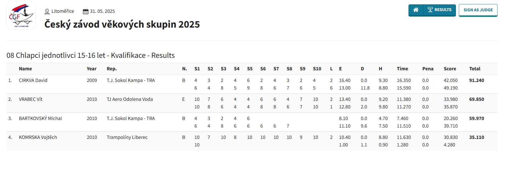
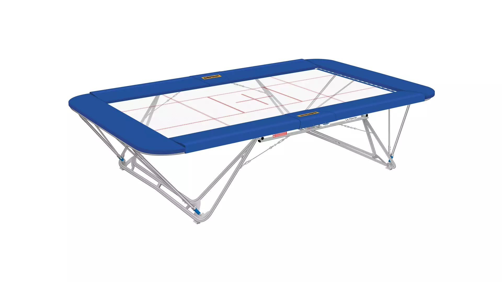

Hodnocení
Na závodech se vždy předvádějí dvě sestavy, které se bodují podle obtížnosti, provedení, výšky a místa dopadu. Vyhrává ten, kdo má nejvíce bodů. V synchonech se místo výšky hodnotí synchronnost.
Obtížnost, neboli těžkost sestavy, se počítá takto: Za každé čtvrt salto je 0,1 bodu a za dokončení salta se přidává dalších 0,1, takže za celé salto je 0,5 bodu. Za každý půlvrut (otočení o 180 stupňů do strany) se také přidává 0,1. Dále rozlišujeme tři polohy: skrčená (C), schilmo (B) a rovná (A). Za každé salto v jiné poloze než C se přidává 0,1 bodu. Příklad: dvojné salto vpřed v poloze B s půlvrutem na konci = 0,5 + 0,5 za salta + 0,2 za polohu + 0,1 za půlvrut = 1,3 bodu. Existují i výjimky, např. extra 0,1 bodu za dvojné salto dozadu nebo extra 0.1 za trojné salto. Obtížnost se počítá pouze ve volné a finálové sestavě. V tabulce je označena jako „D“.
Provedení, neboli krása sestavy, se hodnotí podle správného pohybu rukama, dostatečného dokončení poloh, jejich otevírání ve správný čas a celkového zpevnění těla. Každý prvek má své skóre, ze kterého se odečítají body podle chyb, a výsledné skóre se pohybuje od 1 do 10 (1 je nejlepší). Hodnotí se i ukončení sestavy, tzv. stopáž, kde se sleduje stabilita dopadu a pohyby rukou a nohou. Maximální počet bodů je 20. V tabulce skóre jsou prvky označeny jako S1 až S10, stopáž jako L (z anglického „landing“). Provedení je v tabulce jako „E“.
^
|
Výsledky závodu věkových skupin.
Výška se počítá jednoduše - měří se čas, kdy je závodník ve vzduchu (v sekundách), a ten se přímo převádí na body. Výška je v tabulce označena jako „Time“.
Místo dopadu se hodnotí podle čar na plachtě trampolíny a kříže uprostřed. Za každý dopad v jiném čtverci než kolem kříže se odečítá 0,1-0,3 bodu podle toho, jak daleko byl dopad od kříže. Maximální počet bodů za celou sestavu je 10. V tabulce je to označeno jako „H“.
^
|
Mála ukázka pruhů na trampolíně.
Další, co se odečítá, jsou penalizace - třeba za vypadnutí z trampolíny nebo dotyk okraje trampolíny, čímž se ukončuje sestava a odečítá se pár bodů. Také za oblečení nebo viditelné tetování, za což se většinou odečítá pár desetin bodu. V tabulce se to označuje jako „pena“.
V synchonech se počítá i synchronnost. Sleduje se, jak závodníci dopadají, a průměruje se, jestli dopadají ve stejný čas a na stejné místo. Další věcí je, že se průměruje provedení mezi oběma závodníky. Pokud jeden ze závodníků vypadne nebo skočí jiné salto, sestava se ukončuje.